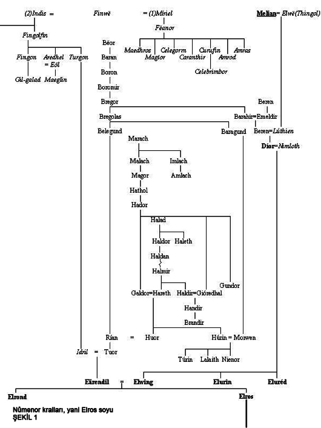

y.3018 [Gandalf, Hobbitköy'e gelir. Osgiliâth ve Thranduil saldırıya uğrar. Gollüm kaçar. Gandalf Orthanc'da hapsedilir ama kaçarak Edoras'a girer. Gölgeyele ile karşılaşır ve ona sahip olur. Çıkın Çıkmazı'ndan ayrılaran Frodo, Fırtınabaşı'nda saldırıya uğrayıp yaralanır. Gandalf, Yarmavadi'ye gider ve Elrond Divanı kurulur. Yüzük Kardeşliği, Yarmavadi'den ayrılır.]
y.3019 [Grup Hollim'e oradan Moria'nın Batı kapısına ulaşır. Gandalf, Balrog ile savaşır. Théoden oğlu Théodred öldürülür. Boromir öldürülür. Ent meclisi kurulur. Frodo, Ölü Bataklık'ı aşar. Gandalf, Minas Tirith'e ulaşır. Pelennor Savaşı. Vadi Savaşı. Kral Brand ve Kral Demirayak Dain'in ölümleri. Şer gecesi. Minas Tirith'den yola çıkan Batı Ordusu, Morgul vadisine ulaşır. Ordu kuşatılır. Gollum, Yüzük'ü kapar ve Kıyamet Çatlağı'na düşer. Barad-dûr'un çöküşü ve Sauron'un sonu.] Kara Kule'nin çöküşü ve Sauron'un Gölge'nin içlerine kaçışıyla ona karşı savaşanların tamamının yüreği ferahlar; ama hizmetkarlarıyla yoldaşlarının üzerine büyük bir korku ve umutsuzluk çöker. Lórien, Dol Guldur'dan üç kez saldırıya uğramıştı, ama o diyardaki elf halkının yiğitliklerinin yanında o topraklara yerleşmiş olan güç a kadar uluydu ki yenilmediler, ancak Sauron'un kendisi bu saldırılarda yoktu. Sınırlardaki güzelim ormanların, keder verici büyük zararlara uğramasına rağmen saldırılar geri püskürtüldü; ve Gölge geçtiğinde Celeborn öne çıkarak sayısız tekneyle Lórien ordusunu Anduin'den geçirdi. Dol Guldur'u ele geçirdiler, Galadriel kalenin duvarlarını yıktı, zindanlarını açtı ve orman temizlendi.(1)
(1)- Bu ve devamındaki üç paragraf Metis baskısında bulunmamaktadır, yhn
Kuzeyde de savaş ve kötülük vardı. Thranduil'in ülkesi istila edilmişti, yangınların yıkımları arasında ve ağaçların altında uzun bir savaş sürüyordu; ama sonunda Thranduil zafere ulaştı. Elflerin Yeni yıl Günü nde Celeborn ile Thranduil, ormanın ortasında karşılaştılar ve Kasvetormanı'ın Yeşilyapraklar Ormanı, Eryn Lasgalen diye yeniden isimlendirdiler. Thranduil, ormanın içinde dağların yükseldiği yerlere kadar bütün kuzey bölümünü kendi topraklarına katar; ve Celeborn da, ormanın daralmanın aşağısında kalan bütün güney bölümünü alır ve orasını Doğu Lorien olarak isimlendirir; onların arasındaki geniş ormanlık bölge Kocaoğlanlar'a ve Ormancılar'a verilir. Ama Galadriel'in ayrılışının ardından birkaç yıl ülkesinde yaşayan Celeborn yorgunluğunun giderek artması üzerine Imladris'e giderek orada Elrond'un oğullarıyla yaşayacaktı. Yeşilorman'da Elfler sorunsuz bir şekilde yaşadılar ama Lórien'de eski halkından sadece birkaç kişi, kederli bir şekilde yaşıyordu ve artık Caras Galadhon'da ışık ya da şarkı yoktu. Aynı dönemde Minas Tirith büyük ordular tarafından kuşatılmıştı ve Sauron'un yandaşlardan oluşan bir ordu, Carnen Nehri'ni geçerek Kral Brand'ın sınırlarını aşmış ve Brand, Vadi'ye geri çekilmişti. Orada Erebor Cüceleri'nden yardım aldı, Dağ'ın eteklerinde büyük bir savaş yapıldı. [Vadi Savaşı] Üç gün boyunca süren savaşın sonunda Kral Brand ile Kral Demirayak Dain katledilmiş, Doğudölleri zafer kazanmıştı. Ama Kapı'yı aşamadılar; Erebor'a sığınan birçok Cüce ve İnsan, orada kuşatma altına alınmıştı. Güney'deki büyük zaferlerin haberleri ulaştığında, Sauron'un kuzey ordusu büyük bir korkuya kapıldı; kuşatılanlar saldırıp orduyu bozguna uğrattı, hayatta kalanlar Doğu'ya kaçtı ve Vadi bir daha sorun yaşamadı. Ardından Brand'ın oğlu H. Ozan Vadi'nin Kralı oldu, Dain'in oğlu Taşmiğfer III. Thorin de Dağ'ın Dibindeki Kral oldu. Elçilerini Kral Elessar'ın taç giyme törenine gönderdiler; ve krallıkları, Gondor'la dostluk içinde, orada yaşadıkları sürece ayakta kaldı; Batı'nın Kralı'nın tacı ve koruması altında yaşadılar.
y.3019 (Shire Takvimiyle 1419) [H. Ozan ve Taşmiğfer Thorin, düşmanı Vadi'den sürerler. Celeborn, Anduin'i aşar ve Dol Guldur'un yıkımı başlar. Taç giyen Kral Elessar Ak Ağaç'ın bir fidesini bulur. Elessar ve Arwen evlenirler. Saruman, Shire kaçar ve bölge halkını ayaklandırır. Subaşı Savaşı ve Saruman'ın sonu. Yüzük Savaşlan'nın sonu.)
y.3020 (Shire Takvimiyle 1420) [Büyük Bolluk Yılı. Samwise, Gül ile evlenir. Bilbo'nun yüz otuzuncu yaş günü.]
y.3021 (Shire Takvimiyle 1421) [Üçüncü Çağ'ın Son Yılı Samwise'ın kızı Zarif Elanor'un doğumu. O gün (25 mart) Gondor hesabıyla Dördüncü Çağ başlar. Frodo ve Samwise Hobbitköy'den ayrılarak Yüzük Koruyucularının Son Yolculuğu'na katılırlar. Eylül ayında Gri Limanlar'a varılır. 29 Eylül'de Frodo ve Bilbo, Yüzük Koruyucuları'yla birlikte Deniz'in ardına geçerler. Üçüncü Çağ'ın sonu. Sam, Çıkın Çıkmazı'na döner.]
(Shire Takvimiyle)
y.1422 [Shire hesabıyla Dördüncü Çağ başladı.]
y.1427 [Kral Elessar, İnsanların Shire'e girmesini yasaklar ve orasını koruması altında olan bir Özgür Ülke ilan eder.]
y.1434 [Peregrin Took, Reis olur. Samwise, yine Belediye Başkanı seçilir.]
y.1451 [Elanor, Irak Yaylalar'da Fastred ile evlenir.]
y.1452 [Irak Yaylalar'dan Kule Tepeleri'ne kadar olan Batısının, Kral tarafından Shire'a verilir. Birçok hobbit o bölgeye yerleşir.]
y.1454 [Elanor ve Fastred'in oğlu Elfstan Kumralbala doğar.]
y.1455 [Fastred, Batısının Vekilharç'ı olur ve karısıyla birlikte Kule Tepeleri'ndeki Altkuleler'e yerleşirler.]
y.1463 [Faramir Took, Samwise'ın kızı Altınbukle ile evlenir.
y.1482 [Karısı Gül Hanım'ın ölümünün ardından Samwise, Çıkın Çıkmazı'ndan ayrılarak Kule Tepeleri'ne gider. Kendisini son gören Elanor olur ve ona Kırmızı Kitap'ı verir. Elanor'un anlattığına göre, Samwise Gri Limanlar'a gider ve böylece son Yüzük-taşıyıcısı da Deniz'e açılır.]
y.1484 [Erdiyarı Efendisi Meriadoc, Rohan Kralı Eomer'den görüşme çağrısı alır. Görevlerini ve mallarını oğullarına bırakarak dostu Reis'le birlikte oraya giderler. Sonra o ve Reis Peregrin birlikte, Gondor'a giderek son yıllarını orada geçirirler, öldüklerinde Gondor ulularının yanına Rath Dinen'e gömülürler.]
y.1541 [l Mart günü Kral Elessar, göçüp gider. Denir ki, Meriadoc ve Peregrin'in mezarları ulu kralın mezarının yanına getirilmiş. Sonra Thranduil'in oğlu Legolas, Ithilien'de gri bir gemi inşa ettirip Anduin'den aşağı, Deniz'in ötesine yelken açmış; ve yanında Cüce Gimli'nin de olduğu söylenir. Ve gemi gittiğinde, Orta Dünya'da Yüzük Kardeşliğinden kimse kalmamış.]
Altıkırkbeş notu:
Burada, elinizdeki küçük kitabı, bir başka deyişle Silmarillion ve Yüzüklerin Efendisinde anlatılan olayların düğümlenişini daha rahat çözebilip anlayabilmeniz için birkaç aile ağacı vereceğiz. Doğal olarak önce geriye dönerek Silmarillion'da ayrıntılarıyla açıklanan Elflerin sınıflanışı ve Edain soylarıyla ilgili bilgileri veriyoruz ki düğümü çözen Elrond ile Elros kardeşlerin atalarını ve Yarı Elf soyunu bir arada görebilesiniz. Ardından da;
Nûmenor kralları, yani Elros soyu.
Isildur ile Anárion'un soyu; Arnor, Arthedain, Gondor Kralları.
Isildur Soyu'nun devamı; Dúnedain Reisleri ve Yeniden Birleşmiş Krallık'ın Kralları.
